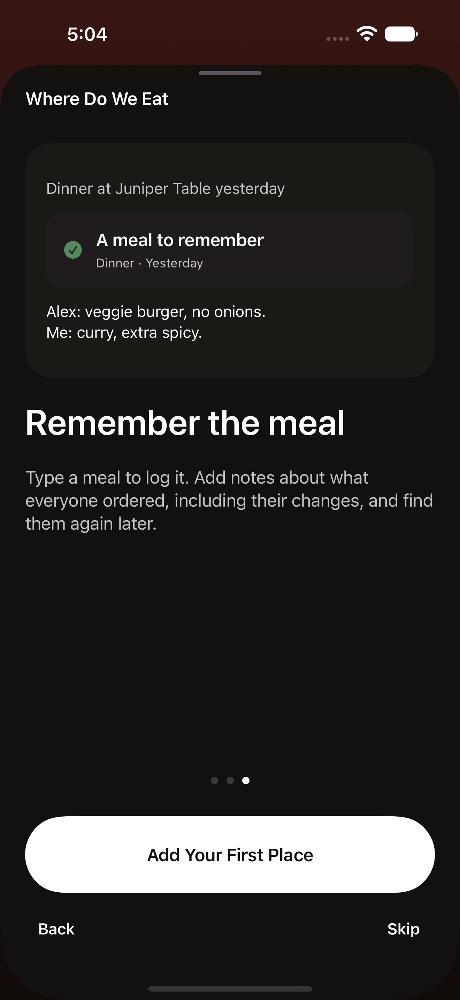

Keep your good places close
Favorites, neighborhood staples, and that place a friend mentioned. Save who recommended it before you leave the add screen.
Save your first placeYour places. Your people. Your next meal.
Keep the restaurants you love and the ones you want to try. Find a place that fits the moment. Remember what made the meal yours.
For iPhone & iPad · Requires iOS / iPadOS 27
Currently in
beta. Screens may evolve.

A little less “I don’t know. You pick.”
Favorites, neighborhood staples, and that place a friend mentioned. Save who recommended it before you leave the add screen.
Save your first placeChoose the occasion and who’s going. Say what sounds good, then get three choices or browse every match.
Find tonight’s choiceLog a meal in a sentence. Keep everyone’s orders and modifications in visit notes, right alongside the restaurant.
Start a dining memory
The details worth keeping
Give that question a good answer.
Alex: veggie burger, no onions.
Me: curry, extra spicy.
Visit notes are a simple place for orders, substitutions, and the things you’d like to remember. Find them again in your log or a restaurant’s history.
Find a past mealPersonal by design
Your collection lives on your device and uses your private iCloud storage when available. Choose what to share, and control what Siri and Spotlight can access.
Read the privacy policySave a favorite. Add somewhere new. Let the next dinner decision be a little easier.
Join the TestFlight beta